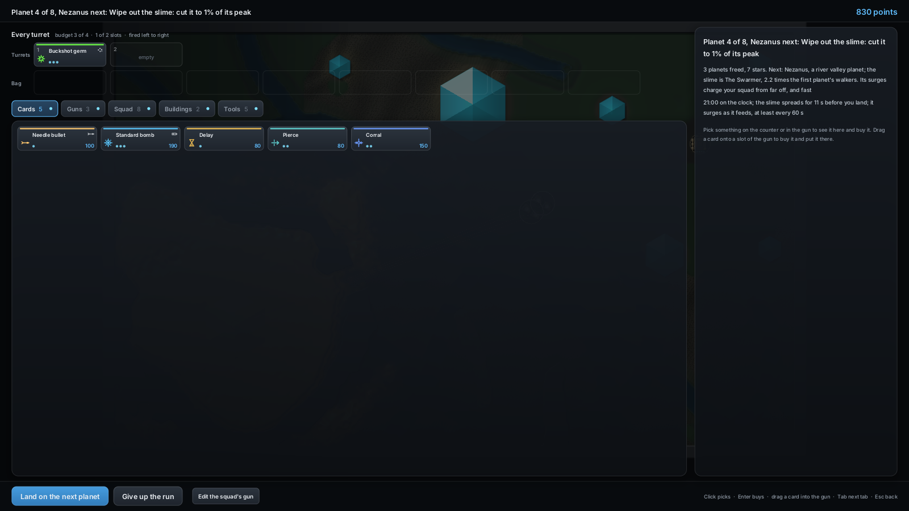
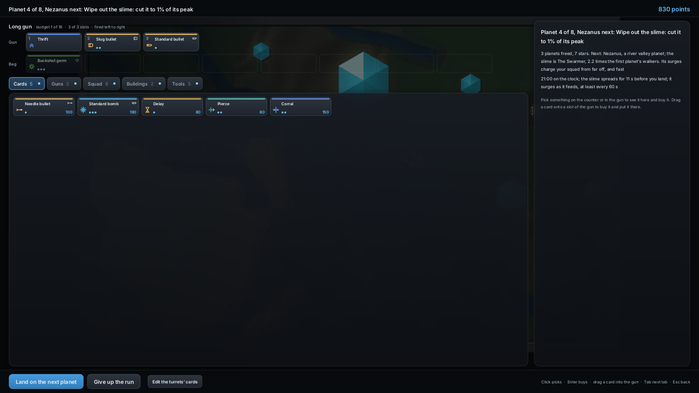
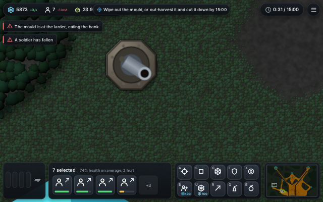

<title>Turrets, Grown Up</title>
<meta name="claude:viewport-fit-sides" content="cover">
<link rel="preconnect" href="https://fonts.googleapis.com">
<link rel="stylesheet" href="https://fonts.googleapis.com/css2?family=Chakra+Petch:wght@500;700&family=Inter:wght@400;600&family=JetBrains+Mono:wght@400&display=swap">
<style>
/* Layout: one reading column, a two-up "debate" row, a body roster as a grid of spec plates */
:root{
  --bg:#f3f5f0; --fg:#1d231c; --muted:#5b6658; --plate:#e5eae0; --line:#c7d0c1;
  --slime:#6f9a2b; --steel:#3c5a74; --warn:#a2552a;
  --display:"Chakra Petch","Segoe UI",system-ui,sans-serif;
  --body:"Inter",system-ui,sans-serif; --mono:"JetBrains Mono",ui-monospace,monospace;
}
@media (prefers-color-scheme:dark){:root:not([data-theme="light"]){
  --bg:#141912; --fg:#e3e9dc; --muted:#9aa693; --plate:#1e251b; --line:#33402f;
  --slime:#9ccc52; --steel:#7fa6c6; --warn:#e08d5c; color-scheme:dark}}
:root[data-theme="dark"]{
  --bg:#141912; --fg:#e3e9dc; --muted:#9aa693; --plate:#1e251b; --line:#33402f;
  --slime:#9ccc52; --steel:#7fa6c6; --warn:#e08d5c; color-scheme:dark}
body{background:var(--bg);color:var(--fg);font:15px/1.6 var(--body);
  padding-left:max(16px,env(safe-area-inset-left,0px));padding-right:max(16px,env(safe-area-inset-right,0px));padding-block:32px 64px}
main{max-width:860px;margin:0 auto;display:flex;flex-direction:column;gap:36px}
h1,h2,h3{font-family:var(--display);text-wrap:balance;line-height:1.2;margin:0}
h1{font-size:2.2rem} h2{font-size:1.4rem;color:var(--steel)} h3{font-size:1.05rem}
p,li{max-width:68ch} p{margin:0} ul{margin:0;padding-left:1.2em;display:flex;flex-direction:column;gap:4px}
section{display:flex;flex-direction:column;gap:12px}
.lede{font-size:1.08rem;color:var(--muted)}
code{font-family:var(--mono);font-size:.86em;background:var(--plate);padding:1px 4px;border-radius:3px}
.two{display:grid;grid-template-columns:1fr 1fr;gap:16px}
.two>div{min-width:0;border:1px solid var(--line);border-radius:6px;padding:16px;display:flex;flex-direction:column;gap:10px}
.for{color:var(--slime);font-weight:600} .against{color:var(--warn);font-weight:600}
.pick{border-left:4px solid var(--slime);padding:12px 16px;background:var(--plate)}
.roster{display:grid;grid-template-columns:repeat(auto-fill,minmax(240px,1fr));gap:12px}
.plate{background:var(--plate);border-radius:6px;padding:14px;display:flex;flex-direction:column;gap:6px;min-width:0}
.plate .tag{font-family:var(--mono);font-size:.75rem;letter-spacing:.06em;text-transform:uppercase;color:var(--muted)}
table{border-collapse:collapse;width:100%;font-size:.92rem}
th,td{text-align:left;padding:8px 10px;border-bottom:1px solid var(--line);vertical-align:top}
th{font-family:var(--display);font-weight:500}
.wrap{overflow-x:auto}
video{width:100%;max-width:100%;display:block;border-radius:4px;background:#000;aspect-ratio:8/5}
.clips{display:grid;grid-template-columns:repeat(auto-fill,minmax(260px,1fr));gap:16px}
.clip{margin:0;display:flex;flex-direction:column;gap:6px;min-width:0}
.clip figcaption{display:flex;flex-direction:column;gap:2px;font-size:.88rem;font-variant-numeric:tabular-nums}
.clip figcaption span{color:var(--muted)}
ol{margin:0;padding-left:1.3em;display:flex;flex-direction:column;gap:6px}
@media (max-width:640px){.two{grid-template-columns:1fr}}
.shots{display:grid;gap:16px;grid-template-columns:1fr}@media(min-width:900px){.shots{grid-template-columns:1fr 1fr}}.shots img{width:100%;height:auto;border-radius:8px;display:block}.shots figcaption{display:flex;flex-direction:column;gap:2px;margin-top:6px;font-size:.9em}
</style>
<main>
<header style="display:flex;flex-direction:column;gap:10px">
<h1>Turrets, grown up</h1>
<p class="lede">Two ways to make turrets deeper: a tech tree of new turret types, or turrets that take gun cards. This page weighs them, recommends a mix, and lists what I need from you. 2026-11-16.</p>
</header>

<section>
<h2>Where turrets are today</h2>
<ul>
<li>One kind. It fires a plain strike at the densest slime it can see: every 0.5 s, 15 cells, 300 health, 500 food to build.</li>
<li>One upgrade in a mission: <b>Render</b> (600 food), so kills in its range pay 0.25 food each. That is the kill box.</li>
<li>In the run shop: unlock Turrets (200), then Turret power three times (tougher, +3 cells, 15% faster).</li>
<li>Turret shots carry no cards. The code already says "turret rounds later", and the gun review listed "a turret deck" as a gap.</li>
<li>Cards already reach turrets from the outside: <b>Corral</b> shoves slime toward the nearest turret, which doubled turret kills.</li>
<li>Coming now (walls thread, PR #398): turrets see and fire over walls; soldiers' guns don't.</li>
</ul>
</section>

<section>
<h2>The two ideas</h2>
<div class="two">
<div>
<h3>1. A turret tech tree</h3>
<p class="for">For</p>
<ul>
<li>New bodies can do what a squad can't: lob over walls, hold a field, shove all day.</li>
<li>Each type reads at a glance on the map, so a base tells you its plan.</li>
<li>Fits the run shop between planets, and choosing a branch gives a run its identity.</li>
</ul>
<p class="against">Against</p>
<ul>
<li>A tree is authored, so the combos are the ones we wrote. Fewer surprises than cards.</li>
<li>It risks a second weapons system beside the cards, which the reviewers warned against.</li>
</ul>
</div>
<div>
<h3>2. Turrets in the card system</h3>
<p class="for">For</p>
<ul>
<li>Reuses everything built: bullet shells, Trigger, Expire, Multicast, shoves. Each new card helps soldiers and turrets at once.</li>
<li>Noita-style combos in a fixed spot: a mine field that shoves slime into a gas turret.</li>
<li>Choosing who gets a card (squad or turrets) is a real trade, which keeps turtling honest.</li>
</ul>
<p class="against">Against</p>
<ul>
<li>On its own, a carded turret is just a squad gun that can't walk. Turrets lose their own character.</li>
<li>Card management per turret could mean a lot of clicking with 20 turrets.</li>
</ul>
</div>
</div>
</section>

<section>
<h2>Recommendation: the tree picks the body, cards fill the barrel</h2>
<p class="pick">Do both, each doing a different job. The tech tree unlocks turret <b>bodies</b>, each defined by how it delivers a shot, and a short branch for each body. The <b>cards</b> decide what the shot does, from the same card bag as the squads. So the tree stays small and readable, and the combos come from the cards.</p>
<p>Bodies I would start with. Each one changes something in the simulation, not only a number:</p>
<div class="roster">
<div class="plate"><span class="tag">today's, cards added</span><h3>Gun turret</h3><p>Straight shots at the densest slime it sees, 2 card slots. Branches: twin barrels (two casts per shot) or long barrel (range, pierce).</p></div>
<div class="plate"><span class="tag">over walls</span><h3>Mortar</h3><p>Lobs its cast over walls onto the thickest slime 8 to 30 cells away, slow, and can't hit near its own foot. The wall-defence body. Branches: cluster or burning shells.</p></div>
<div class="plate"><span class="tag">field writer</span><h3>Sprayer</h3><p>A short cone, firing a little every frame. Its card sets what it lays: gas, bait scent, fire. Holds a gap rather than killing.</p></div>
<div class="plate"><span class="tag">no kill</span><h3>Fan</h3><p>Pushes slime all the time, away from itself or toward the nearest turret. Herding as a building. Cards change the push (Heave, Corral).</p></div>
</div>
<p>A turret's card slots and budget grow with its body's upgrades, the same way rolled guns do. The in-mission upgrade card (Render today) stays for turret economy.</p>
</section>

<section>
<h2>How a turret gets its cards</h2>
<div class="wrap"><table>
<tr><th>Option</th><th>How it plays</th><th>My view</th></tr>
<tr><td><b>A. One deck per turret body</b></td><td>Set in the armory between planets (and with H in a mission). Every mortar fires the mortar deck.</td><td>Recommended: no micro, and a clear trade against the squads' cards.</td></tr>
<tr><td>B. A deck on each turret</td><td>Click a turret, drag cards in.</td><td>Most control, most clicks. Could come later as an upgrade.</td></tr>
<tr><td>C. Copies its builder's squad</td><td>A turret fires the gun cards of the squad that raised it.</td><td>Free and simple, but no choice to make.</td></tr>
</table></div>
</section>

<section>
<h2>Turtling</h2>
<ul>
<li>Turret cards come out of the same bag, so a strong turret deck means a weaker squad.</li>
<li>Raids already go for your best building, and the slime is not made easier.</li>
<li>No upkeep (your ruling). The price is build food, the card choice, and the raids.</li>
</ul>
</section>

<section>
<h2>Questions for you</h2>
<p><b>Answered:</b> both, tree bodies and card barrels (21:36Z); the tree lives in the run shop only (21:41Z).</p>
<ol>
<li>Cards per body (A), per turret (B), or copied from the builder (C)?</li>
<li>Do turrets share the squads' card bag, or get their own shelf in the shop?</li>
<li>Which body after the gun turret: mortar, sprayer or fan?</li>
</ol>
</section>

<section>
<h2>First step, built: turrets fire cards</h2>
<p>Every turret now fires one shared turret deck, the way a squad fires its gun's cards: each shot carries the deck's next cast, Range and Rate cards stretch the turrets' reach and rate, and multicast, trigger and shove cards work as they do on a gun. With no deck, turrets fire plain strikes exactly as before. The clips load the deck by a film key; the run shop now has the menu for it (next section).</p>
<p>Same game on the Fork up to 29 s: the squad holds at its spot firing plain rounds, three turrets stand up and to the right, and from 29 s the turrets load the cards named. Clips are 3 s (29 to 32 s); counts are over 10 s (29 to 39 s), one game each, so read them as a look, not a balance result.</p>
<div class="clips">
<figure class="clip"><video src="page/plain.mp4" controls muted loop playsinline preload="metadata"></video>
<figcaption><b>Plain turrets (as today)</b><span>Turrets in 10 s: 231 by the turrets' shots</span><span>All kills in 10 s: 661 &middot; slime at 39 s: 24,669</span></figcaption></figure>
<figure class="clip"><video src="page/blast.mp4" controls muted loop playsinline preload="metadata"></video>
<figcaption><b>Blast</b><span>Turrets in 10 s: 93 by shots + 261 by 19 blasts</span><span>All kills in 10 s: 868 &middot; slime at 39 s: 24,475</span></figcaption></figure>
<figure class="clip"><video src="page/gas.mp4" controls muted loop playsinline preload="metadata"></video>
<figcaption><b>Sleep gas</b><span>Turrets in 10 s: 236 by shots; 4,373 walkers put to sleep</span><span>All kills in 10 s: 1,299 &middot; slime at 39 s: 24,009</span></figcaption></figure>
<figure class="clip"><video src="page/corral.mp4" controls muted loop playsinline preload="metadata"></video>
<figcaption><b>Corral + heave + plain</b><span>Turrets in 10 s: 427 by shots; 1,623 walkers thrown at the turrets</span><span>All kills in 10 s: 847 &middot; slime at 39 s: 24,465</span></figcaption></figure>
<figure class="clip"><video src="page/bomb.mp4" controls muted loop playsinline preload="metadata"></video>
<figcaption><b>Bomb</b><span>Turrets in 10 s: 61 by shots + 4; 1,648 walkers flung away</span><span>All kills in 10 s: 541 &middot; slime at 39 s: 24,810</span></figcaption></figure>
<figure class="clip"><video src="page/multicast.mp4" controls muted loop playsinline preload="metadata"></video>
<figcaption><b>Multicast + bomb + blast</b><span>Turrets in 10 s: 96 by shots + 43; 1,093 flung</span><span>All kills in 10 s: 601 &middot; slime at 39 s: 24,730</span></figcaption></figure>
</div>
<ul>
<li><b>Gas</b> doubled the game's kills: the turrets put the front to sleep and everyone shot it.</li>
<li><b>Corral</b> throws the slime onto the turrets' own feet, where they kill nearly twice as much as plain.</li>
<li><b>Bomb</b> works against a kill box: it flings the slime away from the guns. That is a trade, and the reason a turret deck is worth choosing.</li>
</ul>
</section>
<section>
<h2>Step 2, built: the turrets' cards come out of your bag</h2>
<p>A free turret deck only made staying home stronger, so now the turrets and the squad share one bag. Once you own turrets, the run shop's bottom bar has <b>Edit the turrets' cards</b>. It switches the gun slots to a rack called "Every turret": 2 slots and a budget of 4, plus a slot and 2 budget for each level of Turret power. A card you put there is one your squad doesn't fire. Click the button again, or pick a gun, and the slots show the squad's gun. Both decks keep their order.</p>
<p>Turret shots now also know which turret fired them. Card kills count as the turrets', Render pays on card kills, and Pull drags slime toward the turret.</p>
<div class="shots">
<figure><figcaption><b>Turrets' rack</b><span>"Every turret": Buckshot germ in slot 1 of 2, budget 3 of 4. The button now reads "Edit the squad's gun".</span></figcaption></figure>
<figure><figcaption><b>Squad's gun</b><span>The same shop on the squad's gun, with the "Edit the turrets' cards" button on the bottom bar.</span></figcaption></figure>
</div>
<p>Run 1, three planets in, 1600&times;900 (<code>larder-world run=1 menu=shop-turrets</code> and <code>menu=shop-mid</code>). To try it, double-click <code>play.cmd</code> once the change is merged, start a Run, and buy a turret.</p>
</section>
<section>
<h2>The mortar, the first turret body</h2>
<p>You picked the mortar. It's a building on the build page (B, 600 food). In a run it unlocks in the shop with <b>Mortars</b>, which needs Turrets first. That's the first step of the tree. Every 4 s it lobs a shell over walls at the thickest slime it can see within <b>80 cells</b>, the longest reach in the game. The shell is in the air for 1.3 to 2.9 s, so it hits nothing on the way, and it lands as a strike 3 cells wide that carries the turrets' next card. It can't hit slime within 8 cells of itself; turrets and soldiers cover that. Turret power makes mortars stronger too.</p>
<div class="clips">
<figure class="clip"><video src="page/mortar.mp4" controls muted loop playsinline preload="metadata"></video>
<figcaption><b>A mortar 60 cells behind the squad (top left)</b><span>Shells arc up over their shadows and land on the trunk by the squad and on the arm by the crystal</span><span>5 shells from 20 s to 40 s: 390 walkers killed, about 78 a shell</span></figcaption></figure>
<figure class="clip"><figcaption><b>Close up</b><span>The turret's base with a short, wide tube turned toward its last shell. It sinks back and its mouth flares as a shell leaves.</span></figcaption></figure>
</div>
<p>That's about 20 kills a second, against about 8 for one plain turret in the kill box. It's one film, so read it as a look. If it plays too strong, I'll slow its rate or shrink its blast.</p>
</section>
</main>
